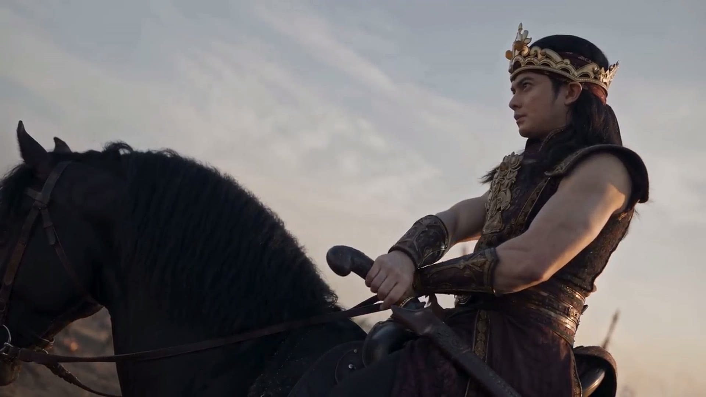
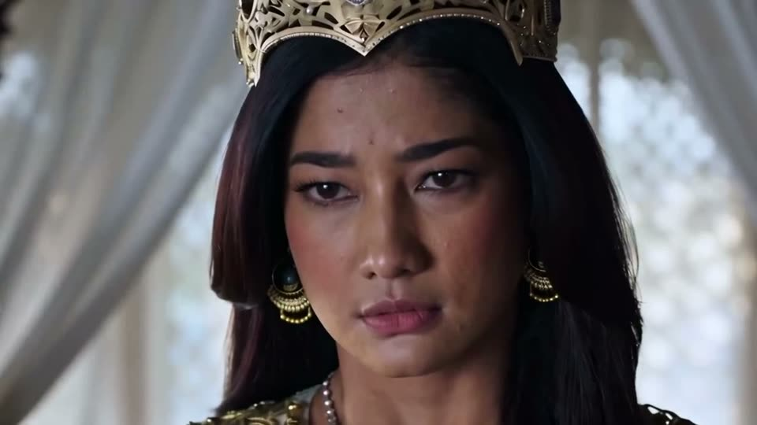
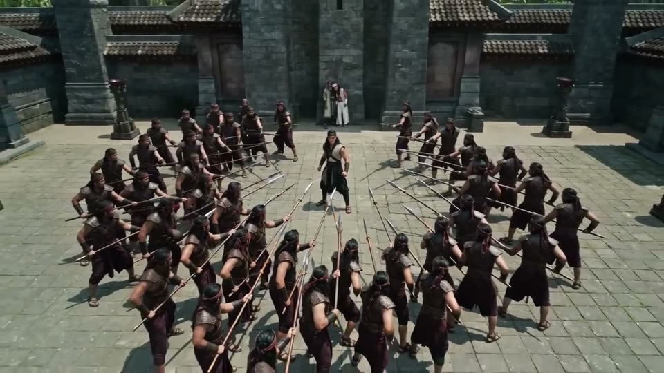
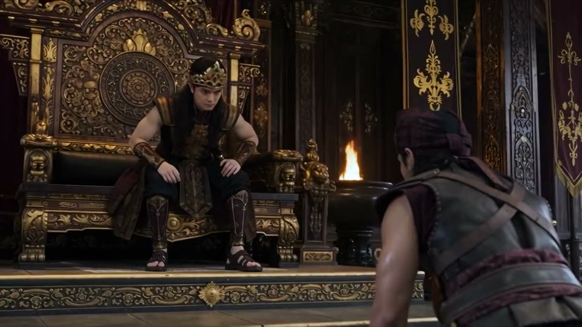

Bagaimana ini dibuat?
Jaka Tingkir Saga
drama AI produksi kami

Tidak ada kamera di lokasi. Diarahkan manusia, digarap AI: dari sketsa sutradara, lewat peta kedalaman, sampai gambar setara TVC.
Karya terpilih
Dari naskah sampai tayang, tanpa satu hari syuting.
Film, iklan, dan karakter yang kami garap untuk brand, agensi, dan instansi.


